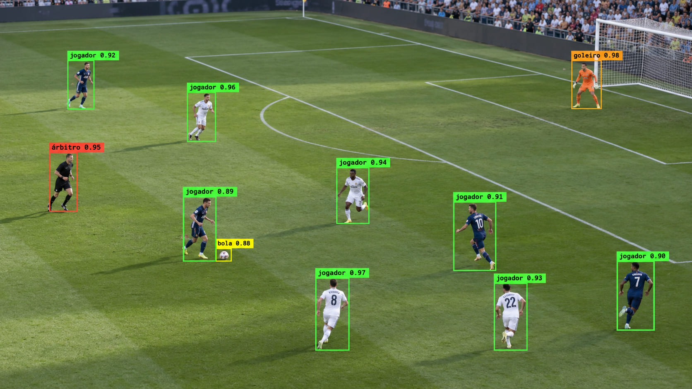
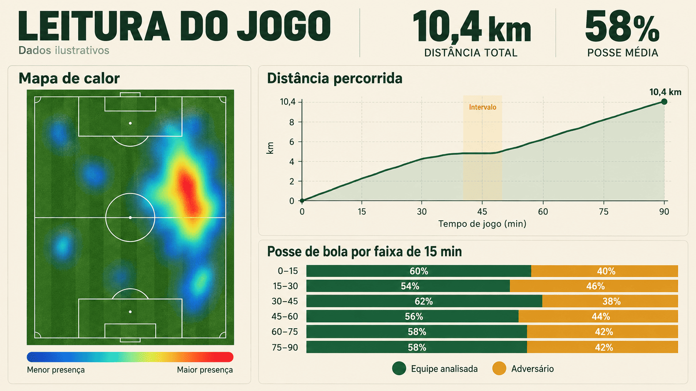
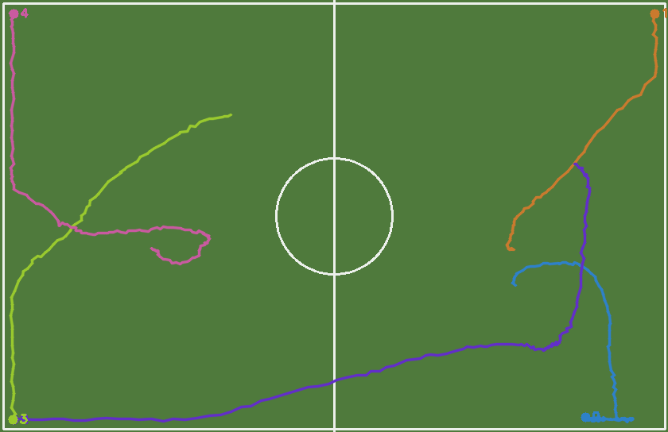
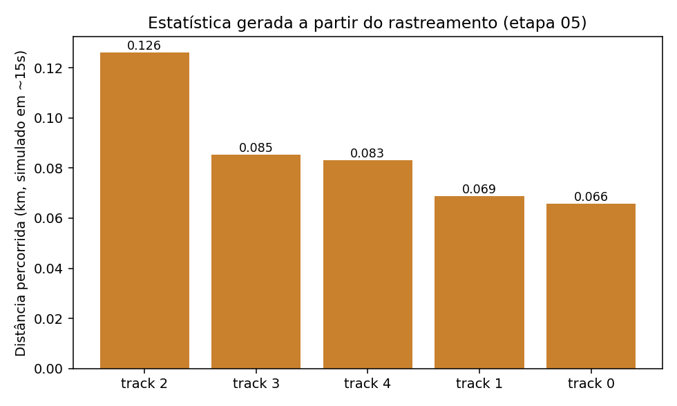
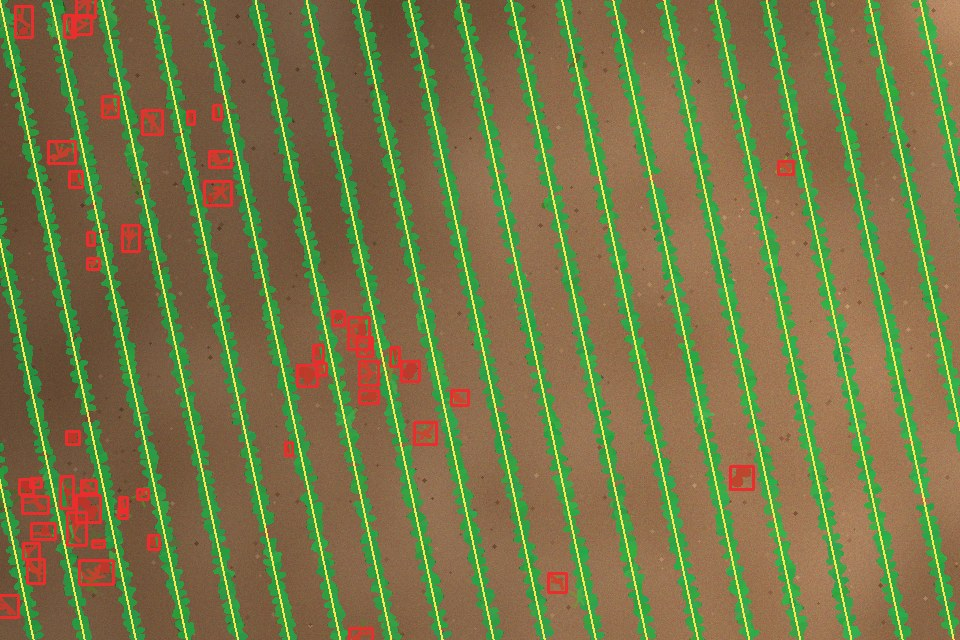
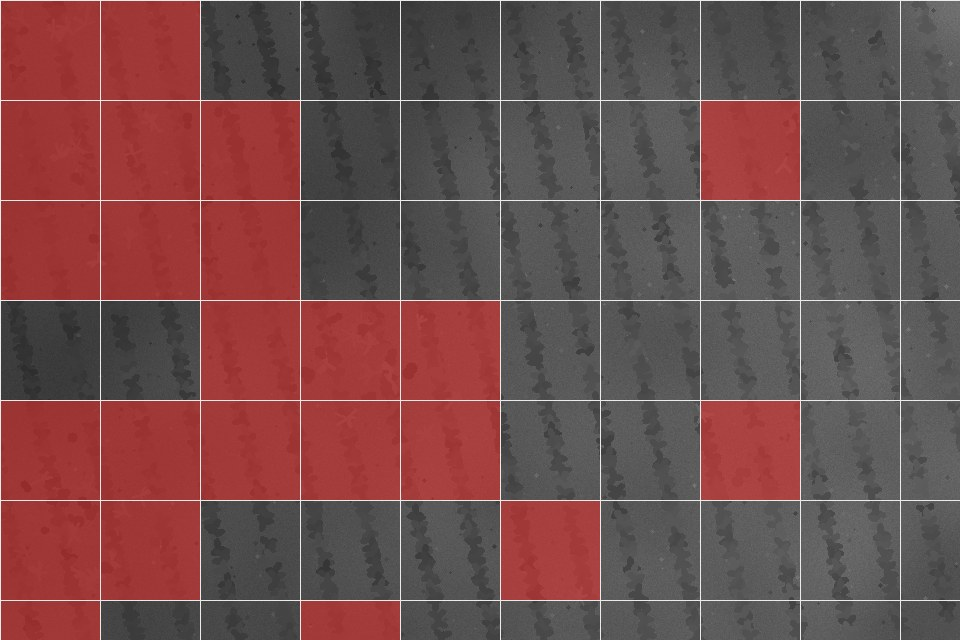

Visão computacional · Esporte · Agronomia · CVAT + YOLOv8
Cada jogada vira linha de dados
Como anotação assistida e detecção de objetos transformam um vídeo de partida em distância percorrida, posse de bola e mapas de calor — sem sensores, só câmera. E o mesmo raciocínio levado à lavoura, para achar plantas daninhas em fotos de drone.
O problema: um vídeo não sabe o que está vendo
Uma transmissão de futebol é só uma sequência de quadros — pixels sem significado. Para transformar isso em estatística, um algoritmo precisa primeiro aprender a reconhecer o que cada região da imagem representa: ali é um jogador, ali é a bola, aquele é o árbitro.
Esse reconhecimento vem de dois componentes que se complementam: uma ferramenta para ensinar o que procurar, e um modelo que aprende a procurar sozinho depois.
CVAT
Computer Vision Annotation Tool. Interface onde um humano desenha caixas delimitadoras (bounding boxes) ao redor de jogadores, árbitros e bola em quadros de vídeo — construindo o conjunto de exemplos que o modelo vai estudar.
YOLOv8
"You Only Look Once" versão 8, da Ultralytics. Rede neural que localiza múltiplos objetos em uma imagem em uma única passada, rápida o suficiente para processar vídeo quadro a quadro.
O pipeline, do vídeo bruto à planilha
Cinco etapas conectam a câmera ao dado estatístico. Cada uma resolve um problema específico antes de passar a bola adiante para a próxima.
Captura
Vídeo de transmissão ou câmera fixa, dividido em quadros individuais para processamento.
OpenCVAnotação
Amostra de quadros é rotulada manualmente — jogador, goleiro, árbitro, bola — para criar o dataset de treino.
CVATTreinamento
O dataset exportado no formato YOLO ajusta os pesos de um modelo pré-treinado para a tarefa específica.
YOLOv8Detecção + rastreio
O modelo treinado detecta objetos em cada quadro; um algoritmo de rastreamento mantém a identidade de cada jogador entre quadros.
ByteTrackEstatística
As trajetórias viram métricas: distância percorrida, velocidade, posse de bola, mapa de calor, formação tática.
Pandas
Por que isso importa além do laboratório
O mesmo pipeline que detecta um jogador em uma imagem de treino já sustenta sistemas reais de análise tática. Projetos recentes combinam o YOLOv8 com algoritmos de rastreamento (como HybridSort ou ByteTrack) para manter a identidade de cada jogador entre quadros e, a partir disso, calculam métricas como velocidade, aceleração, distância total percorrida, estimativa de fadiga e estatísticas de posse de bola.
Outras implementações rodam o pipeline completo do vídeo bruto até uma visão tática em formato de radar, usando YOLOv8 para detecção e um classificador de times baseado em agrupamento visual das cores do uniforme, enquanto abordagens acadêmicas mais recentes buscam associações de jogadores entre quadros mais leves computacionalmente, para tornar a análise viável a partir de vídeo de transmissão comum — sem câmeras especializadas ou sistemas multi-câmera.
O ganho real não é "ver melhor" — é transformar horas de vídeo em uma tabela que pode ser filtrada, cruzada e comparada entre partidas.
Análise tática
Formação em campo, posicionamento médio e zonas de pressão, reconstruídos a partir das posições detectadas.
Desempenho físico
Distância percorrida, picos de velocidade e sinais indiretos de fadiga ao longo da partida, por jogador.
Arbitragem assistida
Modelos de detecção de jogadores e de pontos-chave do campo ajudam a reduzir erro humano em decisões que dependem de posicionamento, como impedimentos.

Da teoria ao script: detectando e rastreando jogadores
O trecho abaixo assume um dataset já anotado no CVAT e exportado no formato YOLO. Ele cobre o treino (etapa 03) e a detecção com rastreamento (etapa 04) — a base sobre a qual qualquer estatística da etapa 05 é calculada.
1. Estrutura de pastas esperada após exportar do CVAT
2. data.yaml
3. Treinamento do modelo
4. Detecção + rastreamento quadro a quadro, com estatística simples
O valor de np.hypot(dx, dy) aqui está em pixels — para virar metros reais, falta uma etapa de calibração que mapeia as coordenadas da imagem para as coordenadas do campo (homografia), algo que projetos como o Football-PitchVision resolvem combinando a detecção de pontos-chave do campo com a posição dos jogadores para gerar a visão tática em formato de radar.
5. Exemplo executável sem precisar instalar YOLOv8/PyTorch
Instalar o PyTorch pesa mais de 1,5 GB e exige GPU para ser prático — inviável em muitos laboratórios de aula. O script abaixo isola exatamente a etapa 04/05 do pipeline (rastreamento + estatística), usando um "detector simulado" com ruído e falhas propositais no lugar do YOLOv8 real. A troca para vídeo de verdade é uma linha só: substituir o detector simulado pela chamada model.track(source="partida.mp4", ...) do bloco 4 acima — o rastreador e as estatísticas continuam os mesmos.


Do gramado à lavoura: plantas daninhas vistas por drone
Troque a câmera de transmissão por um drone voando a 30 metros de altura e o gramado por um talhão de soja. O problema é o mesmo: uma imagem cheia de pixels sem significado, onde é preciso encontrar objetos específicos. Só que agora o objeto procurado é a planta daninha, que disputa água, luz e nutrientes com a cultura.
Hoje o controle mais comum é pulverizar herbicida na área inteira, mesmo onde não há daninha. Se a imagem mostrar onde ela está, o pulverizador só precisa abrir os bicos nesses pontos.
O jogador vira a daninha
No futebol, o detector procura pessoas. Na lavoura, procura plantas que não deveriam estar ali, separadas em folha larga e gramínea.
O rastreio vira a linha de plantio
O rastreador usava a posição anterior para saber quem é quem. Na lavoura, a referência é a linha de semeadura: o que está fora dela é suspeito.
A distância vira mapa de prescrição
A estatística final deixa de ser quilômetros por jogador e passa a ser uma grade do talhão dizendo onde aplicar herbicida.
O pipeline na lavoura
Voo e captura
Drone com câmera RGB fotografa o talhão de cima, com sobreposição entre fotos, no início do ciclo da cultura.
OpenDroneMapAnotação
Recortes das fotos são rotulados como soja, folha larga, gramínea ou solo.
CVATTreinamento
Uma rede pré-treinada aprende a diferença de formato e textura entre a folha da cultura e a da daninha.
YOLOv8 / CNNDetecção
O modelo marca as daninhas em cada foto. Sem modelo treinado, índice de verde e linhas de plantio já resolvem parte do problema.
OpenCV (ExG)Prescrição
As detecções viram uma grade do talhão: cada célula recebe ou não herbicida, e o mapa vai para o pulverizador.
QGISPor que isso importa no campo
No Brasil, um trabalho da UFMS fotografou lavouras de soja em Campo Grande com um drone DJI Phantom e montou um conjunto público com mais de 15 mil recortes de solo, soja, gramíneas e folhas largas. Redes convolucionais treinadas nesse material passaram de 99% de acerto médio na classificação, e o mesmo conjunto segue sendo usado em pesquisas recentes.
Anotar milhares de recortes à mão é caro. Pesquisadores franceses mostraram que dá para gerar os rótulos automaticamente usando as linhas de plantio — o que está fora da linha é daninha — e treinar a rede com eles, com resultados comparáveis aos de rótulos feitos por especialistas. É exatamente a ideia do app desta aula.
O ganho econômico já foi medido. Em testes da Universidade Estadual de Iowa, um mapa de daninhas feito por drone e carregado no pulverizador reduziu o uso de produto em cerca de 50%, sem diferença de produtividade em relação à aplicação em área total. Pulverizadores com câmeras na barra, que decidem bico a bico, registraram economia média de 59% em mais de 400 mil hectares de milho, soja e algodão em 2024.
O ganho real não é “achar a daninha” — é deixar de pulverizar o talhão inteiro para tratar só as manchas onde ela está.
6. O núcleo da detecção sem rede neural: índice de verde + linhas de plantio
7. Quando houver dados anotados, o mesmo YOLOv8 do futebol
O app da aula ganhou uma página com esse pipeline. Ele gera uma lavoura simulada, com linhas inclinadas, reboleiras de daninhas e iluminação irregular, ou recebe uma foto de drone de verdade. Como na simulação do futebol, a lavoura inventada tem gabarito, então o app mostra também quanto da daninha foi encontrado e quanto escapou.


O limite do método geométrico aparece no gabarito: daninha que nasce dentro da linha tem a cor da soja e está no lugar da soja, então fica invisível. Separar as duas pelo formato da folha é trabalho para uma rede treinada — e é por isso que as etapas 02 e 03 existem.
O que fica
CVAT ensina o modelo a olhar; YOLOv8 olha sozinho depois; o rastreamento dá nome e memória a cada jogador entre quadros — e é só nesse ponto que um vídeo de futebol começa a parecer uma planilha.
Na lavoura, a linha de plantio faz o papel da memória: ela diz onde a cultura deveria estar, e tudo que é verde fora dela vira uma célula vermelha no mapa de aplicação.
Fontes consultadas
- MatchIQ — plataforma de análise de futebol com YOLOv8 e HybridSort. ir.iba.edu.pk
- Football-PitchVision — pipeline completo de detecção, rastreamento e visão tática. github.com
- Detecção de jogadores e pontos-chave de campo para arbitragem assistida. archives.univ-eloued.dz
- YOLOv8n para análise de densidade espacial em vídeo de transmissão. dergipark.org.tr
- FERREIRA, A. S.; PISTORI, H.; FREITAS, D. M.; SILVA, G. G. Data for: Weed detection in soybean crops using ConvNets. Mendeley Data, v. 2, 2017. data.mendeley.com
- FERREIRA, A. S. Redes neurais convolucionais profundas na detecção de plantas daninhas em lavoura de soja. Dissertação (Mestrado em Ciência da Computação) — UFMS, 2017. sigpos.ufms.br
- BAH, M. D.; HAFIANE, A.; CANALS, R. Deep learning with unsupervised data labeling for weed detection in line crops in UAV images. Remote Sensing, v. 10, n. 11, 1690, 2018. arxiv.org
- WOEBBECKE, D. M.; MEYER, G. E.; VON BARGEN, K.; MORTENSEN, D. A. Color indices for weed identification under various soil, residue, and lighting conditions. Transactions of the ASAE, v. 38, n. 1, p. 259–269, 1995.
- Iowa State University Extension. Drone-based weed mapping for targeted spraying. crops.extension.iastate.edu
- John Deere. See & Spray customers see 59% average herbicide savings in 2024. deere.com